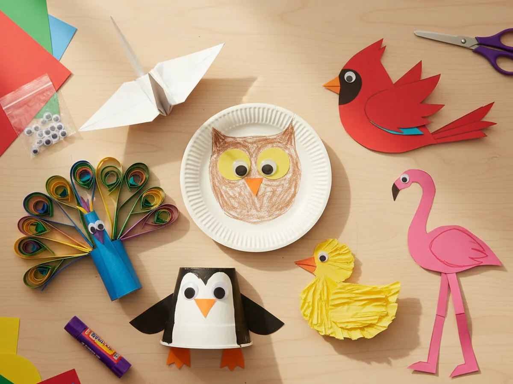
Birds are one of those magical themes that little ones never seem to outgrow. They flap, they sing, they have funny names, and they come in every color you can imagine. These paper craft birds capture all of that wonder using just simple supplies you probably already have in your craft drawer. Each idea is gentle on time, gentle on mess, and absolutely full of charm. 🐦
The best thing about paper craft birds is how forgiving they are. A wonky beak only makes the bird more lovable, and a slightly lopsided wing usually ends up being the favorite part. Pick the bird your child is most excited about, set out the basics, and let your little one lead the way while you sit beside them and just enjoy the moment.
What You'll Need
Most of these paper craft birds share the same handful of supplies, so a quick check of your craft drawer covers nearly every idea on this list.
- Crayola Construction Paper, a big bulk pack of bright colors that lasts for months of bird crafting.
- Fiskars Blunt-Tip Kid Scissors, blunt tips and small handles that fit little hands safely.
- Elmer's Disappearing Purple Glue Sticks, washable and easy for kids to see where they have applied glue.
- Crayola Washable Broad Line Markers, perfect for adding feather details, beaks, and tiny eyes.
- Self-Adhesive Googly Eyes, the easiest way to bring any bird to life in seconds.
- Assorted Tissue Paper, soft and colorful for layered wings and feather textures.
- Coceca Craft Feathers, fluffy real feathers that add an irresistible finishing touch.
- A roll of tape, for projects that need a little extra hold.
20 Easy Paper Craft Birds for Kids
1. Paper Plate Owl
This is one of the most beloved paper craft birds because the round paper plate is already the perfect owl shape. Color or paint the plate brown, then glue on two big white circle eyes with black googly pupils, a small orange triangle beak, and two pointed ear tufts. Add a few brown paper feather shapes across the body to give it texture. The result is wide-eyed, wise, and totally huggable.
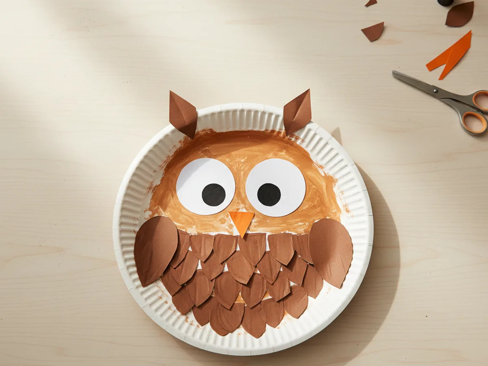
2. Construction Paper Cardinal
A bright red cardinal is one of those paper bird crafts that feels instantly familiar, especially in fall and winter. Cut a rounded body shape from red paper, add a triangle crest at the top, glue on a small black mask around the eye, and add a tiny orange beak. Glue the finished cardinal onto a brown paper branch with a couple of green leaves. This one looks lovely on a window or fridge.
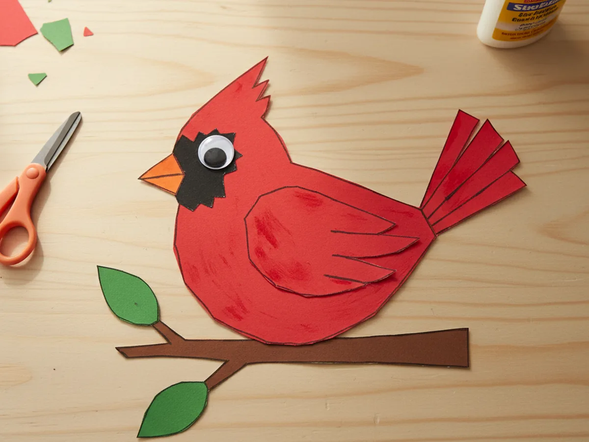
3. Paper Bowl Penguin
An upside down white paper bowl turns into the cutest little penguin in just a few minutes. Paint the back of the bowl black, glue a white paper oval on the front for the belly, and add googly eyes, a tiny orange beak, and small black flipper wings on the sides. Two orange paper feet finish him off. This is one of those paper craft birds that always gets named on the spot.
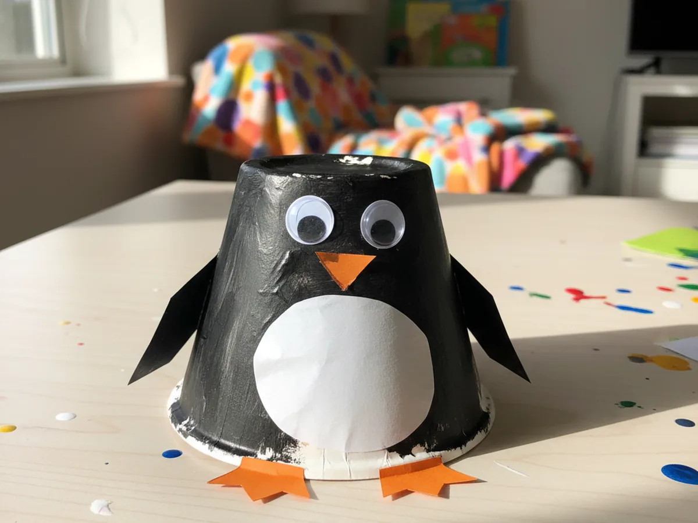
4. Origami Paper Crane
An origami crane feels almost like a tiny moment of meditation, and it is one of the most graceful paper craft birds on this list. For a quick and forgiving version with younger kids, try a beginner crane with simple folds and gentle creases. Older kids will love discovering the symmetry. Do not worry about perfection, the slightly imperfect ones are always the most charming. The classic origami crane is also a beautiful symbol of traditional Japanese paper folding, which can spark a fun conversation while you craft.
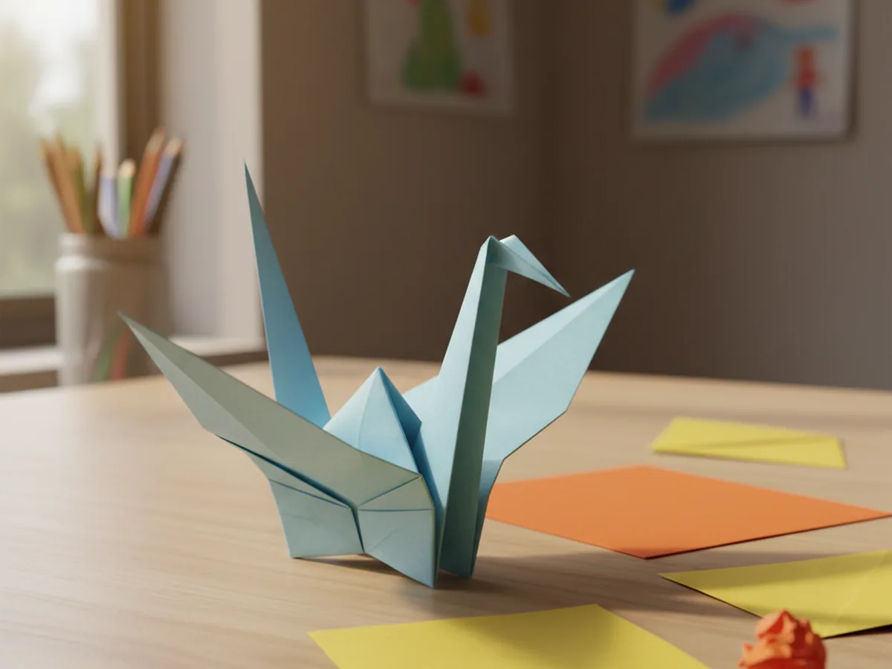
5. Paper Strip Peacock
A peacock is the diva of the bird world, and this version uses overlapping paper strips for a stunning fanned tail. Cut blue, green, purple, and teal strips, fan them out, and glue a tiny round eye spot at the end of each one. Add a small round body, a beak, two googly eyes, and a tiny crest of three thin paper feathers at the top. This is one of those paper craft birds that always gets a proud display on the fridge.
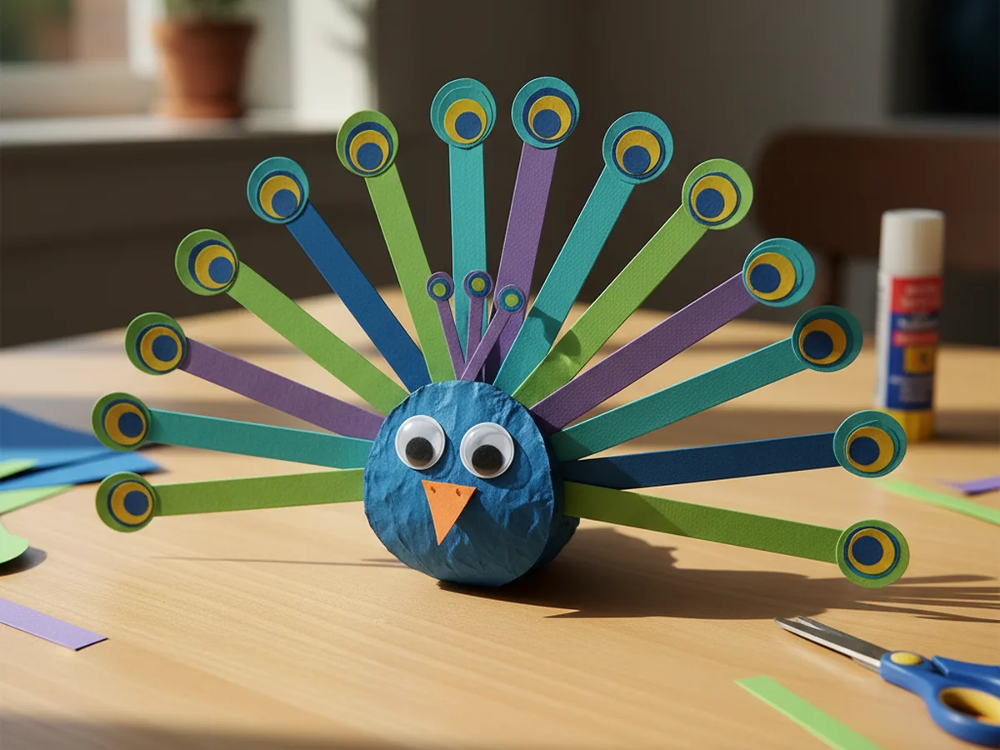
6. Handprint Eagle
Trace your child's hands on brown construction paper and use them as the eagle's spread wings. Glue both handprint shapes on either side of a brown body, then add a small white head with a yellow triangle beak and one googly eye. Handprint crafts always feel a little more personal, and this is one of the sweetest ways to turn a moment into a keepsake. Do not forget to date the back so you can look at it years from now.
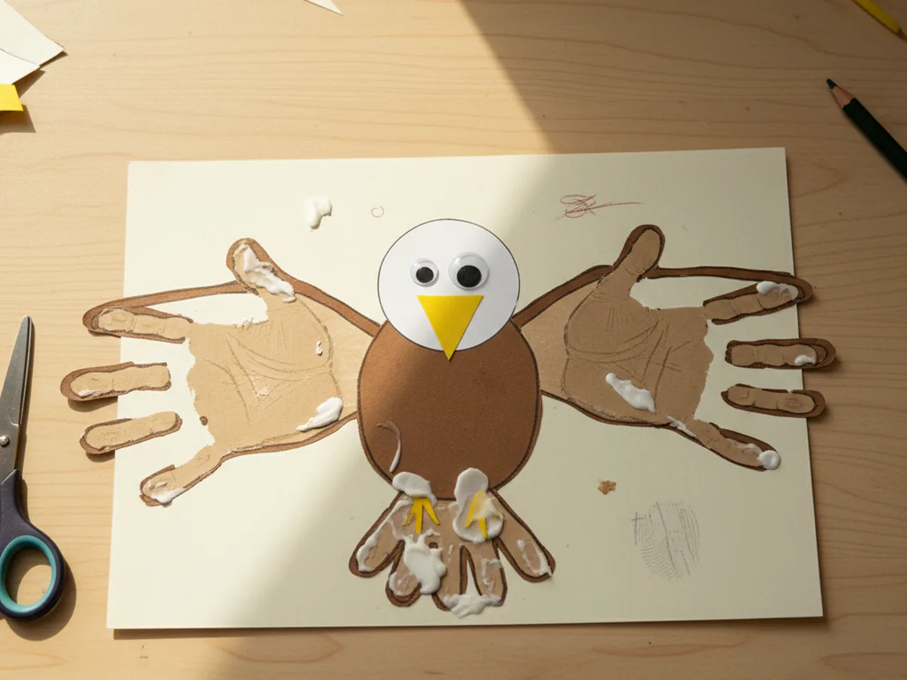
7. Paper Cup Flamingo
Take an upside down pink paper cup, attach a long pink paper neck, and curve it up to a small flat head with a black-and-pink beak. Add wings on the sides and two thin pink legs at the bottom. The result stands upright on a table or shelf and looks like the most adorable little flamingo. These standing paper bird crafts always become instant pretend-play characters at our house.
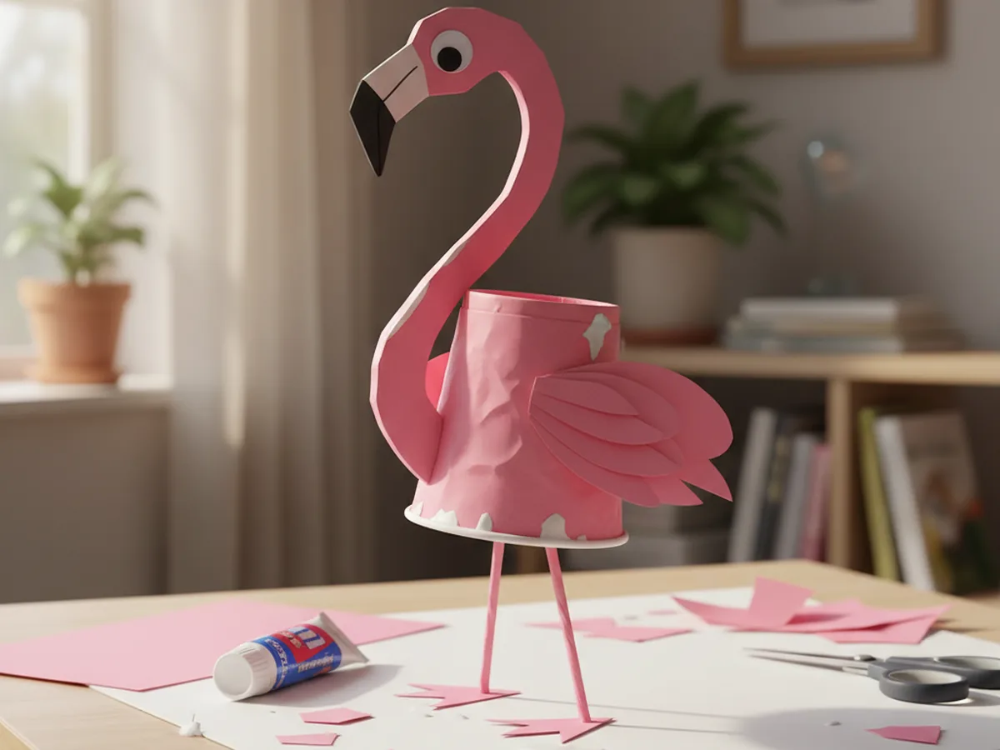
8. Toilet Roll Robin
A simple cardboard tube becomes a sweet little robin in no time. Wrap the tube in brown paper, glue a bright orange-red oval on the front for the breast, then add small wings, googly eyes, and a tiny yellow beak. A few tail feathers at the back finish him off beautifully. Children adore robins because they really do hop around the yard, and this craft is a lovely way to talk about the birds you both spot together.
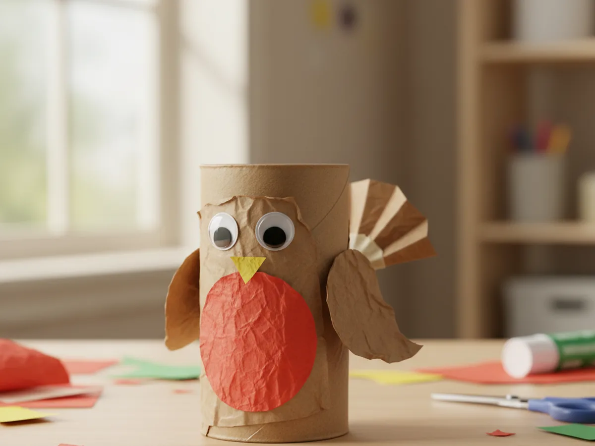
9. Paper Plate Parrot
Cut a paper plate in half and fold to form the body of a colorful parrot. Add bright red, yellow, blue, and green paper feathers along the back and tail for a tropical pop. A round head with a curved black beak and one googly eye finishes the look. Of all the paper craft birds on this list, a parrot is the one most likely to start a conversation about jungles, pirates, and silly bird voices.
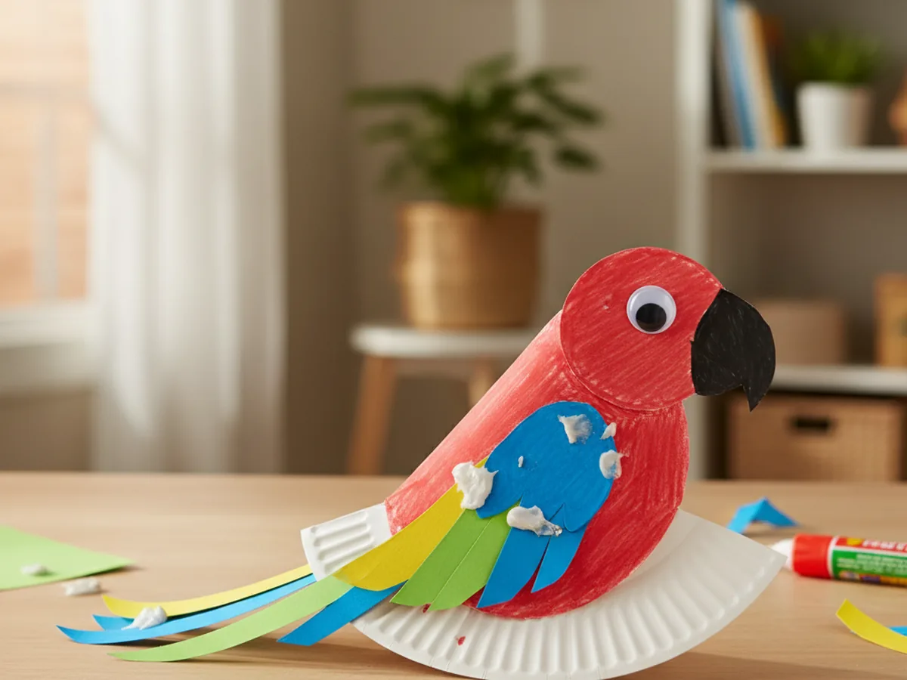
10. Paper Bag Chicken
A small white paper lunch bag is the perfect base for a fluffy little chicken. Stuff a bit of crumpled paper inside the bag, twist the top, and add a round head with a red comb, a small yellow beak, and tiny red wattles. Two paper wings on the sides and yellow paper feet at the bottom finish her up. This is one of those paper bird crafts kids love to line up in a row to make a whole little flock.
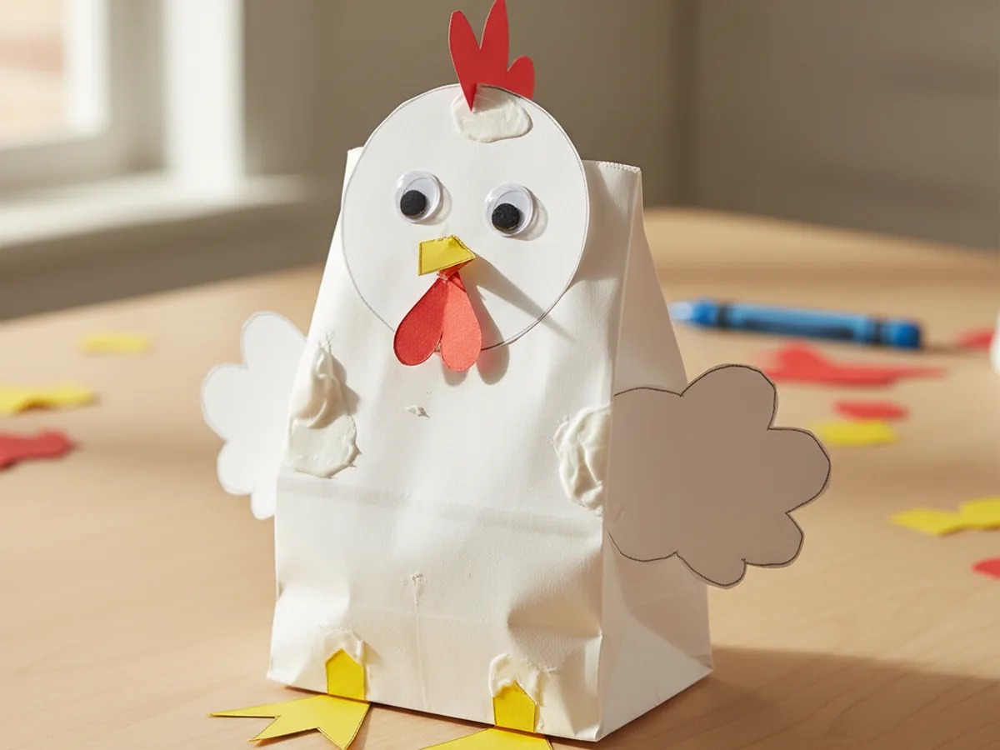
11. Bright Paper Bluebird
This bluebird is one of the simplest paper craft birds on the list and a wonderful introduction for very young children. Cut a teardrop body from bright blue paper, add an orange chest patch, two folded wings, a small triangle tail, a yellow beak, and one googly eye. Glue everything onto a piece of cardstock for a finished bird that looks ready to fly off the page. So sweet on a bedroom wall.
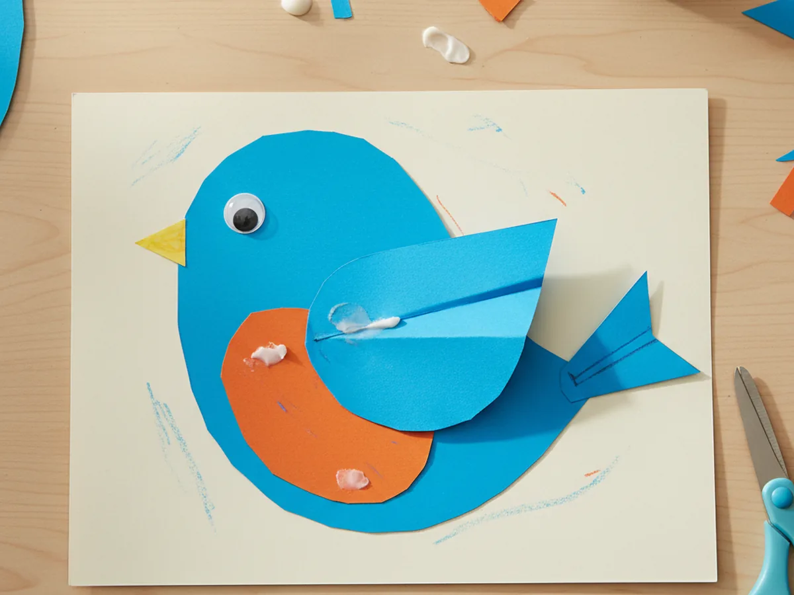
12. Paper Toucan
The toucan is all about that big, bold, colorful beak. Start with a black paper body, add a white throat patch, then layer orange and yellow paper to build a giant curved beak that really pops. Add one large googly eye, a green paper accent, and small black feet. Toucans are an instant favorite because they look like cartoons in real life, and the dramatic beak gives kids something fun to design.
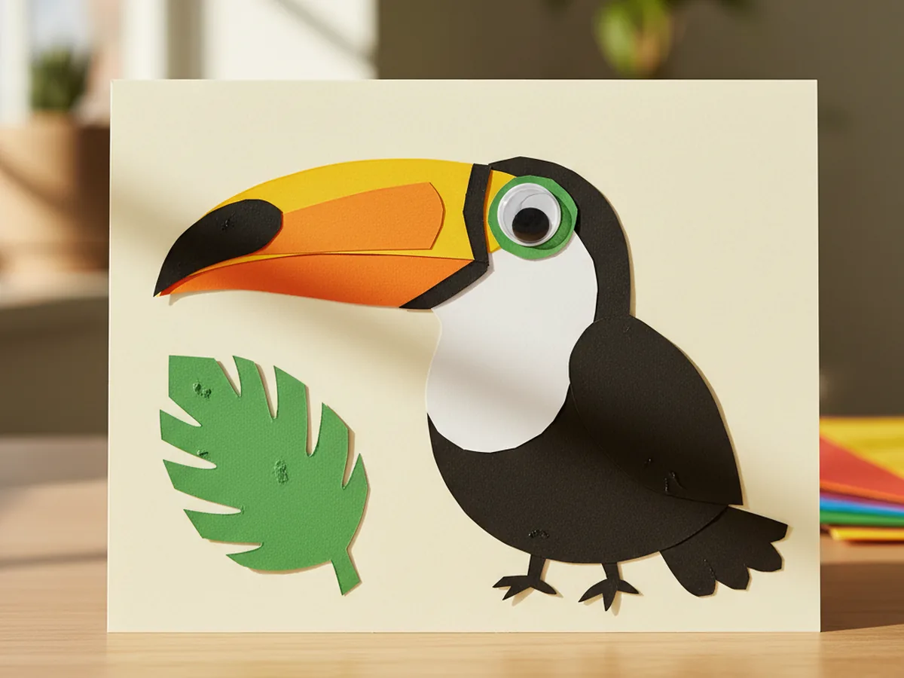
13. Tissue Paper Hummingbird
Crinkled tissue paper is perfect for the soft, shimmery wings of a hummingbird. Cut a small green and purple body, then glue crinkled green tissue paper wings on each side, slightly raised so they look like they are mid flap. Add a long thin black beak, a tiny eye, and a small fanned tail. Glue near a paper flower for an instant little garden scene. The texture is so satisfying for tiny hands.
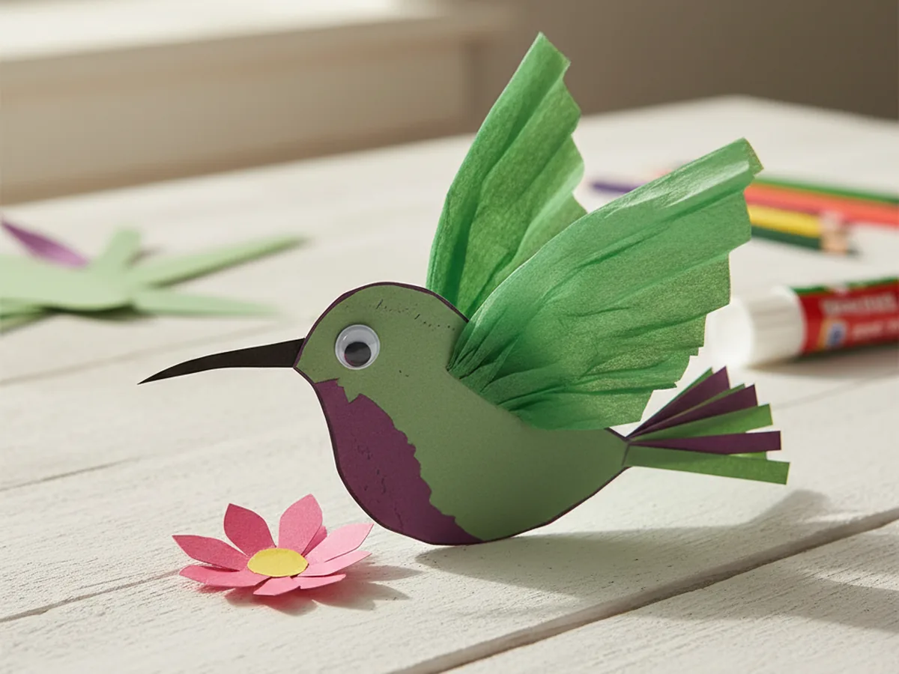
14. Origami Pigeon
A simple origami pigeon is one of the easiest folded paper craft birds for younger kids. With a few gentle folds, a square of light grey paper turns into a friendly little bird shape with a triangle beak and a tiny tail flap. Make a small flock of them in different shades and arrange them on a windowsill. The slightly imperfect folds always end up looking the most charming.
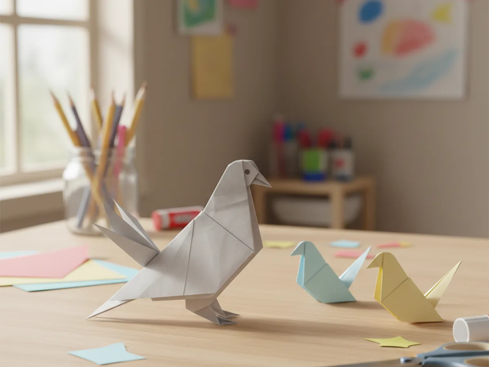
15. Paper Plate Duck
Paint a paper plate yellow and you are halfway to the cutest little duck. Add a small yellow circle head with one googly eye, an orange triangle beak, two yellow paper wings, and two orange webbed feet at the bottom. Children love quacking along while they craft, and the bright yellow always feels cheerful. These paper bird crafts are also adorable as a row of ducklings if you scale them down.
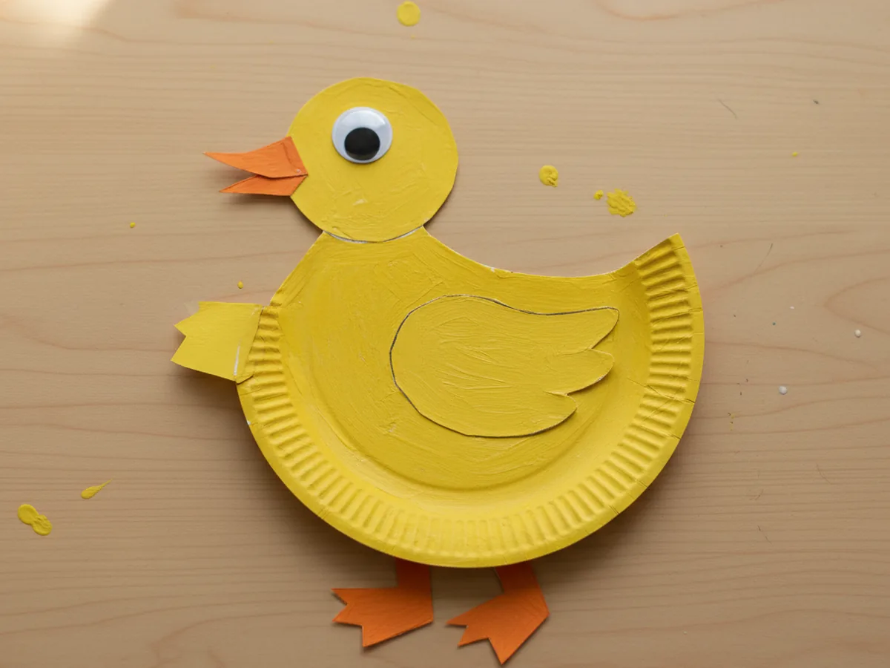
16. Construction Paper Swan
A graceful swan looks fancy but is surprisingly simple to make. Cut a round body and a long curved neck from white paper, glue them onto a soft blue paper background to suggest water, and add a tiny orange beak and a googly eye. Layer a row of fanned white paper feather strips across the back for the wings. This is one of those paper craft birds that always feels like a tiny piece of art.
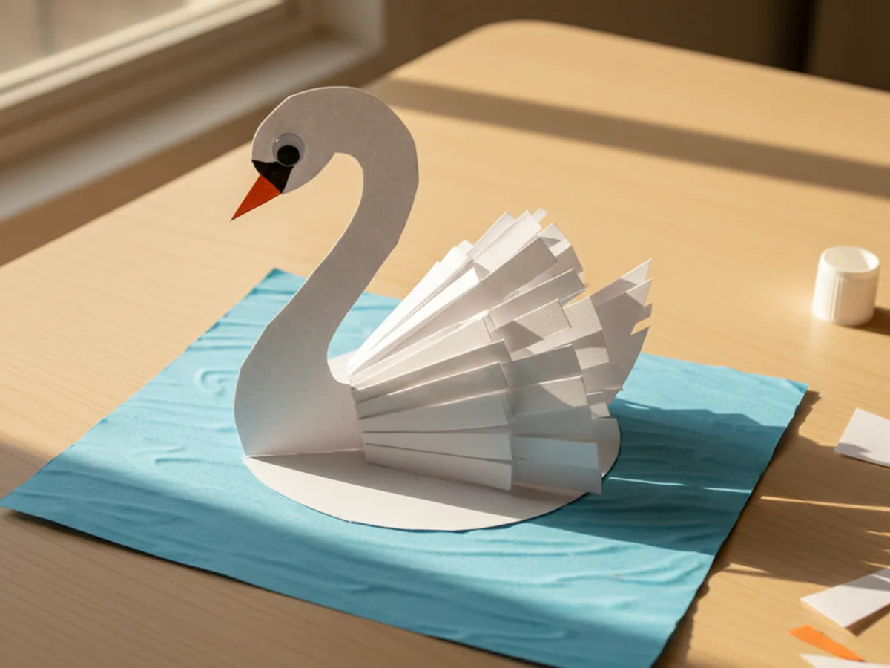
17. Paper Roll Woodpecker
This little woodpecker uses a cardboard tube as the body, with red paper around the head and black paper around the rest. Two small white wing patches, a long pointed black beak, googly eyes, and a tiny red feather crest at the top complete the look. Tap him gently against a paper tree trunk and listen for the giggles. Woodpeckers always lead to imaginative play once they are finished.
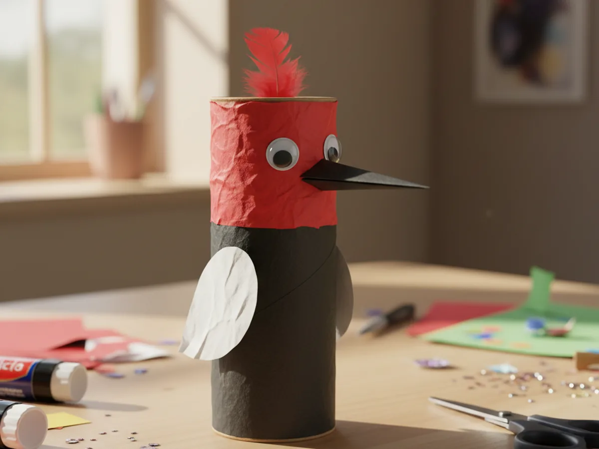
18. Paper Pelican
A pelican is all about that pouchy yellow beak. Cut a large white body, add a small head with a tiny eye, then build the giant yellow beak with a wide pouch underneath. Two short wings on the sides and small orange feet finish him off. Glue everything onto a light blue paper background to suggest the sea. Perfect for summer trips to the beach or coastal storybook afternoons. ✨
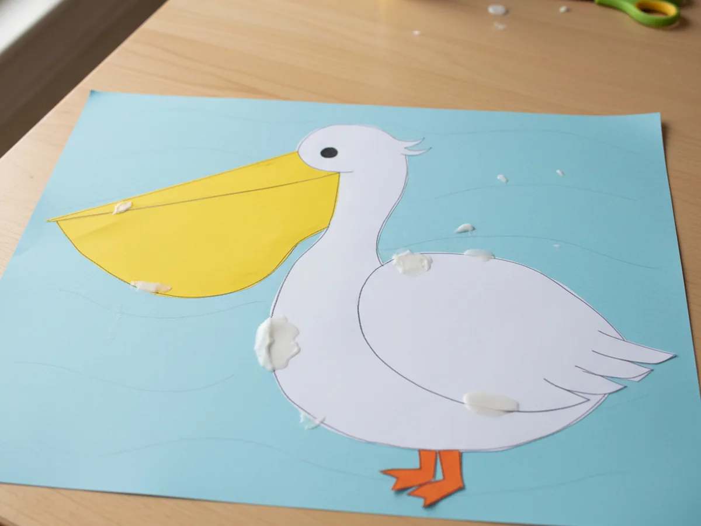
19. Paper Strip Crow
This little crow is sleek and graceful, made from black construction paper with a tail of three black paper strip feathers. Add two folded black wings, a small head, a yellow beak, and one bright googly eye. Glue him onto a brown paper branch for a striking look. Crows are one of those paper craft birds kids love because they feel a little mysterious and a little mischievous.
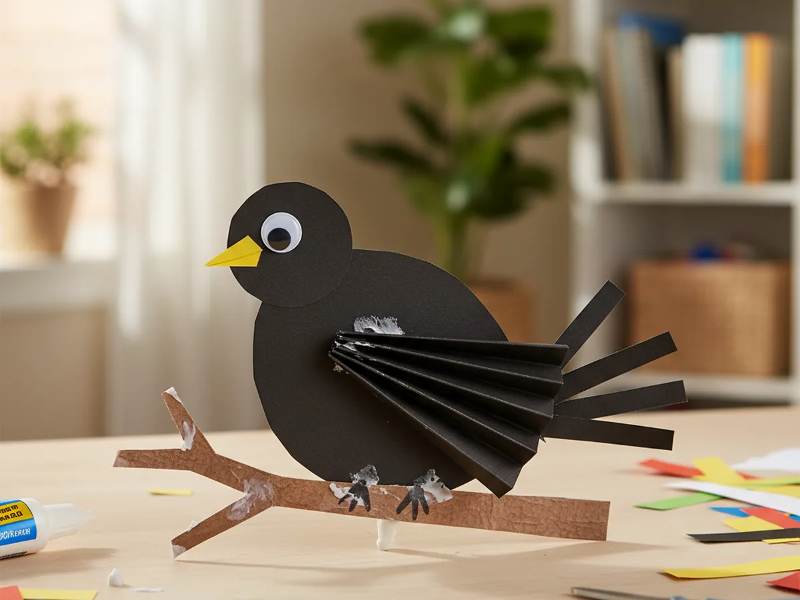
20. Paper Plate Rooster
End the list with a proud rooster that always brings a smile. Cut a paper plate in half, paint it brown and orange, then add a red comb, a yellow beak, a wattle, one googly eye, and a fan of red, orange, and yellow paper strip feathers as the long, dramatic tail. He looks like he is about to crow. This is one of the most cheerful paper craft birds to wrap up an afternoon. 🌞
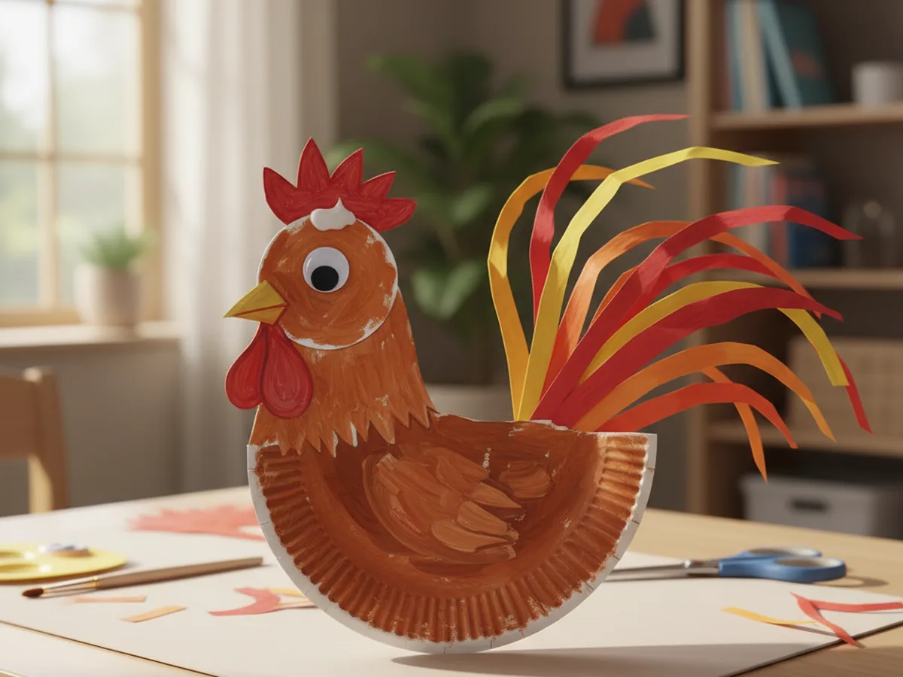
Final Thoughts
The very best part of any of these paper craft birds is not the perfect feather or the symmetrical wings. It is the way your little one lights up when their paper bird gets a name, gets a story, and suddenly belongs to your family. Pick the bird that excites your child today, set out a few supplies, and let the afternoon unfold gently. 🌿
Even one of these paper craft birds can turn a quiet hour into a sweet little memory. Do not aim for perfect, just enjoy being together while your bird collection grows.
More Crafts You'll Love
If you enjoyed these bird ideas, here are two more cozy paper craft collections to explore with your little one.
Happy crafting, and may your kitchen table fill up with the cutest little flock of paper birds.